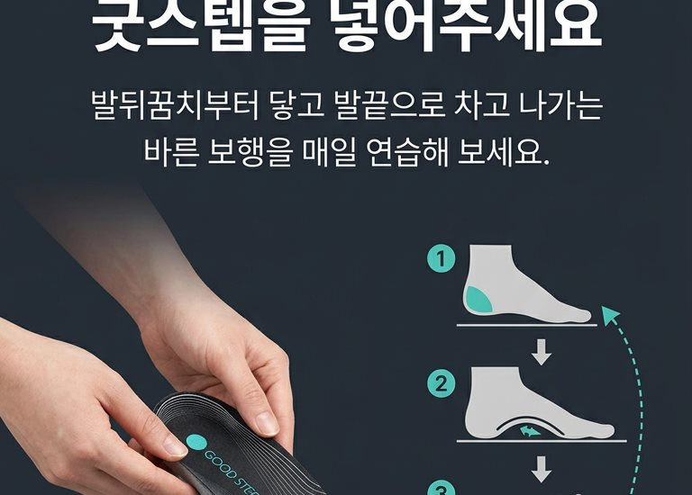

Scroll
발의 압력 이동이 틀어지면 발목, 무릎, 허리까지 부담이 이어질 수 있습니다
걸음의 불균형이 허리 부담으로 이어질 수 있습니다
압력 경로가 무너지면 무릎 정렬에도 영향을 줍니다
한쪽으로 치우친 보행이 전신 불균형을 유발합니다
하루 종일 걷고 서 있을수록 차이가 커집니다
발바닥 특정 부위에 반복 부담이 집중됩니다
Center of Pressure (CoP) - 압력중심라인
CoP(Center of Pressure)란 걸을 때 발바닥 압력이 지나가는 중심 경로입니다. 정상적인 걸음은 뒤꿈치 → 아치 안쪽 → 엄지발가락 방향으로 압력이 이동합니다. 이 경로가 무너지면 발의 피로와 정렬 부담이 커질 수 있습니다.
뒤꿈치 중앙 → 발 내측 아치 → 엄지발가락
뒤꿈치 외측 → 발 외측 → 새끼발가락 방향
외측으로 이탈된 CoP
이상적인 CoP 경로


THE SOLUTION
기존 인솔이 충격 흡수와 아치 지지에 집중했다면,
GoodStep은 정상 CoP 라인을 유도하는 구조를 더했습니다.
발의 압력 이동을 보다 자연스럽게 정렬해
바른 보행을 돕는 보행 교정형 기능성 인솔입니다.
CORE TECHNOLOGY
생체역학 연구를 기반으로 설계된 3가지 핵심 구조가
발의 압력중심(CoP)을 정상 경로로 유도합니다.
TECHNOLOGY
Raised Lateral Forefoot Area
발의 과도한 외측 쏠림을 방지하고 CoP를 발의 내측으로 자연스럽게 유도합니다.
Arch Support Structure
안정적인 지지를 통해 뒤꿈치 중앙 → 내측 아치 → 엄지발가락으로 이어지는 이상적인 CoP 경로를 완성합니다.
Polyester
쾌적함과 내구성: 땀과 습기를 빠르게 건조시켜 쾌적함 제공
PU Foam
충격 흡수 및 피로 감소: 보행 시 발생하는 충격 흡수
EVA
핵심 구조 지지 및 형태 유지: CoP 교정 구조를 안정적으로 지지
BENEFITS
Gait & Posture Induction
Musculoskeletal Alignment
Shock Relief for the Foot
Plantar Fasciitis Prevention
Foot Muscle Strengthening & Sarcopenia Prevention
내 걸음을 바로잡는 첫 번째 선택
지금 시작하기 →

FOR YOU
HOW TO USE

기존 깔창을 빼고 굿스텝을 넣어주세요 워킹화에 적용
워킹화에 적용
 트레이닝화에 적용
트레이닝화에 적용
뒤꿈치 정중앙으로 지면에 착지
압력을 안쪽 아치 방향으로 부드럽게 이동
엄지발가락을 사용해 지면을 밀어주기
이러한 보행은 보행 균형 개선, CoP 라인 훈련, 보행 효율 향상에 도움이 됩니다.
CoP(압력중심) 라인을 의식하면서 걸으면 교정 효과가 극대화됩니다. 처음에는 의식적으로 3단계 보행법을 연습하세요.
운동화, 트레이닝화, 워킹화 등 갑피가 높은 신발에 사용하세요.
구두, 단화, 로퍼 등 갑피가 낮은 신발에는 착용이 어렵습니다.
신발 내부의 기존 인솔을 제거한 후 본 인솔로 교체하여 사용하세요.
초기 착용 시 통증은 발 근육과 뼈가 재정렬되는 정상적인 과정입니다. 꾸준히 사용해주세요.
족저근막염 치료비 평균 30~80만원
굿스텝은 단돈 55,000원으로 예방합니다
GOOD STEP INSOLE
CoP 라인 교정용
네이버 스마트스토어에서 안전하게 구매하실 수 있습니다
REVIEWS
굿스텝을 먼저 경험한 분들의 이야기입니다
4.8점의 선택, 나도 경험해보기
구매하러 가기 →TRUST
제 30-1141798 호
2021년 12월 10일 등록
이학박사 하종규
Dr. Chong-ku Hah, Ph.D.
출원 완료
인정서 보유
확인서 보유
FAQ
신발 사이즈 기준으로 동일한 사이즈를 선택하시면 됩니다. 인솔을 신발에 넣은 후, 발 뒤꿈치가 인솔 뒤쪽에 맞닿도록 위치를 조정해주세요. 만약 인솔이 약간 크다면 앞부분을 가위로 잘라 조절할 수 있습니다.
3중 레이어(Polyester + PU Foam + EVA) 구조로 충격 흡수와 쿠션감을 모두 갖추었습니다. CoP 교정 구조는 단단하게 지지하되, 상단 PU 폼 레이어가 부드러운 착용감을 제공합니다. 일반 쿠션 인솔과 달리 '탄탄하면서 편안한' 느낌입니다.
중성 세제를 사용하여 미지근한 물에 가볍게 손세탁해주세요. 세탁기 사용은 인솔 형태를 변형시킬 수 있어 권장하지 않습니다. 세탁 후에는 직사광선을 피하고 통풍이 잘 되는 곳에서 자연 건조해주세요.
개인차가 있지만, 보통 2~4주 꾸준히 착용하시면 보행 변화를 체감하실 수 있습니다. 초기에는 발 근육이 새로운 정렬에 적응하면서 약간의 뻐근함이 있을 수 있으나, 이는 정상적인 과정입니다. 3단계 보행법을 의식하며 걸으시면 효과가 더 빠릅니다.
네, 오히려 평발이나 발볼이 넓은 분들께 더 도움이 될 수 있습니다. 아치 서포트 구조가 무너진 아치를 지지해주고, CoP 라인 교정 구조가 압력 분산을 유도하여 발의 피로를 줄여줍니다. 다만 갑피가 높은 운동화에 사용하셔야 발볼에 무리가 없습니다.
구매 후 30일 이내 만족하지 못하시면 무조건 환불해드립니다. 네이버 스마트스토어를 통해 간편하게 교환/환불 신청이 가능하며, 반품 배송비만 부담하시면 됩니다.